Correction 02: four targeted pieces revised; twelve retained. Starting a58f4eb accepted as working art; this revision awaits review. 16 canonical RoboPixel candidate pieces. Two separately composed native views. Static proof only — no integration, approval or release.
Readme · Exact asset manifest · Static checks
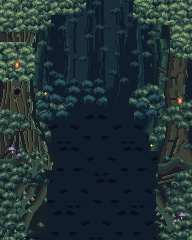
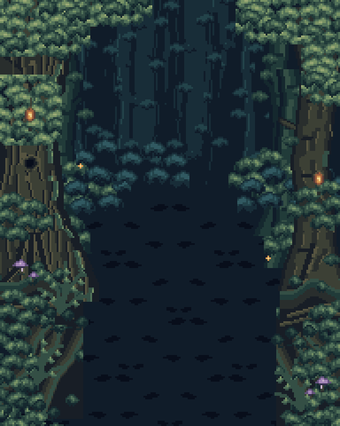
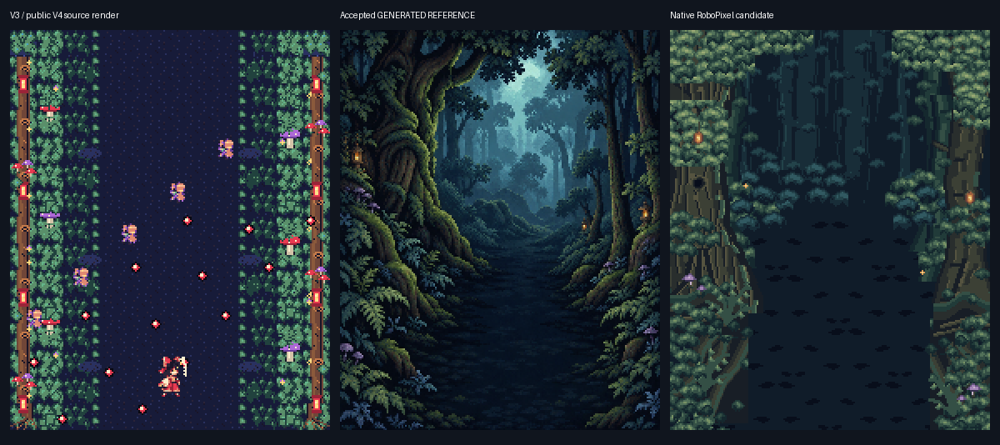
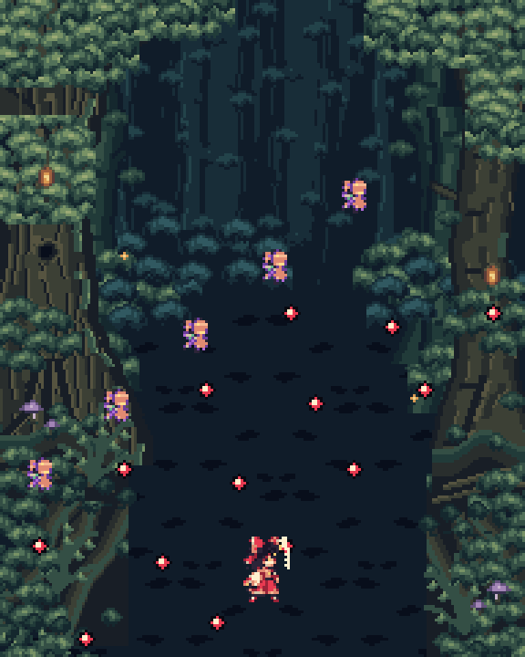
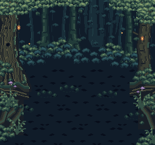
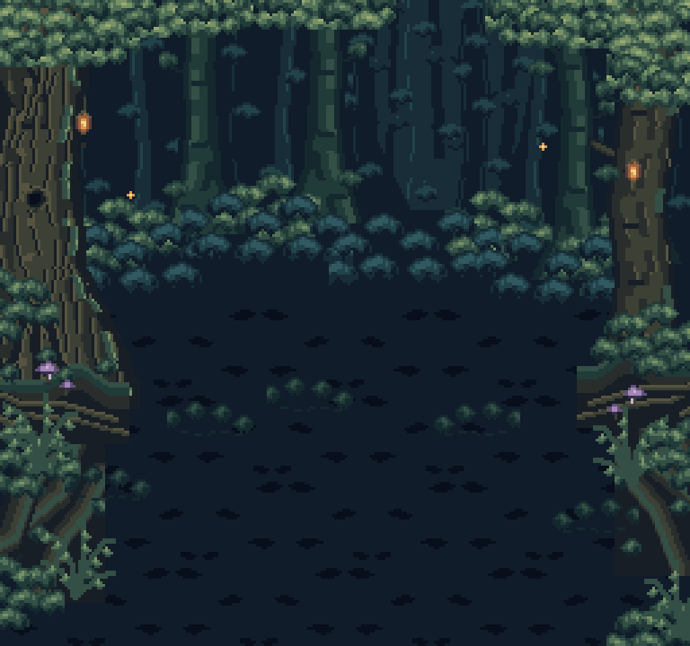
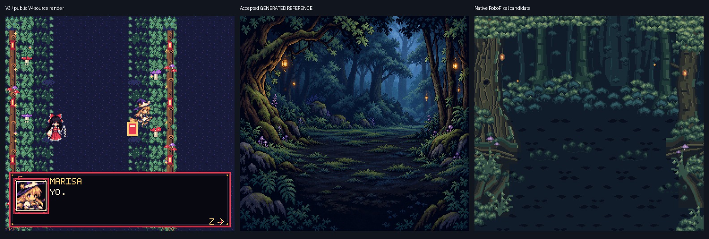
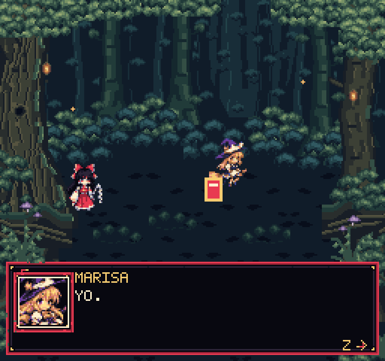
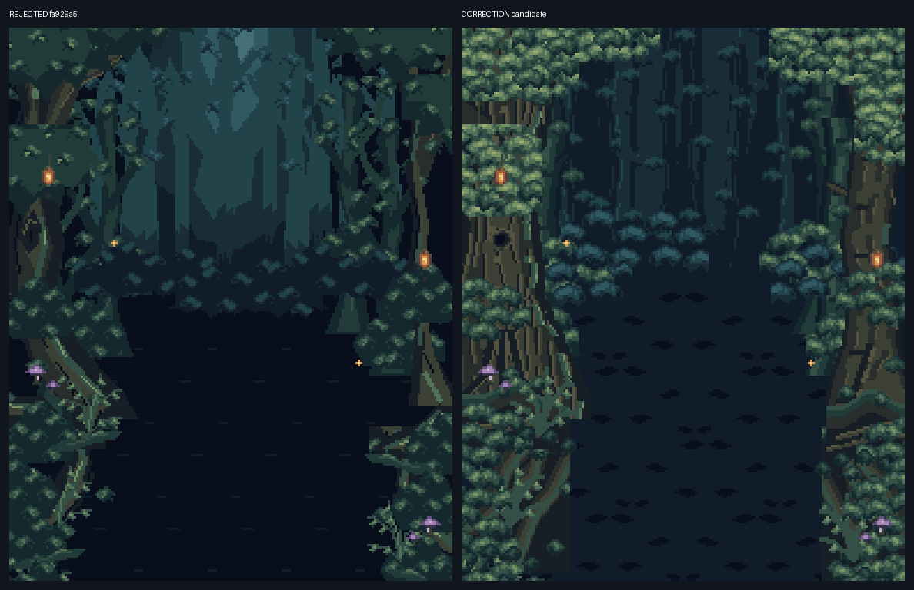
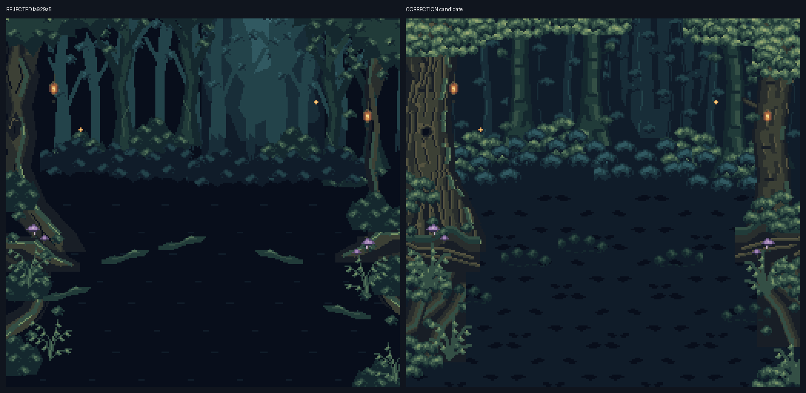
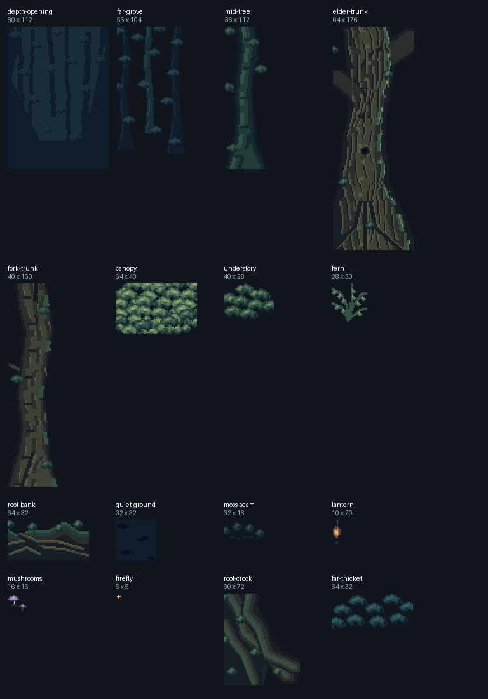
Generated references were not sampled into these assets. Baselines are labeled source renders; witnesses are not runtime QA. Further artistic refinement is reserved for Owner direction.
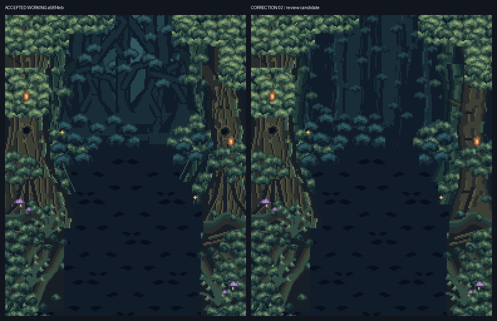
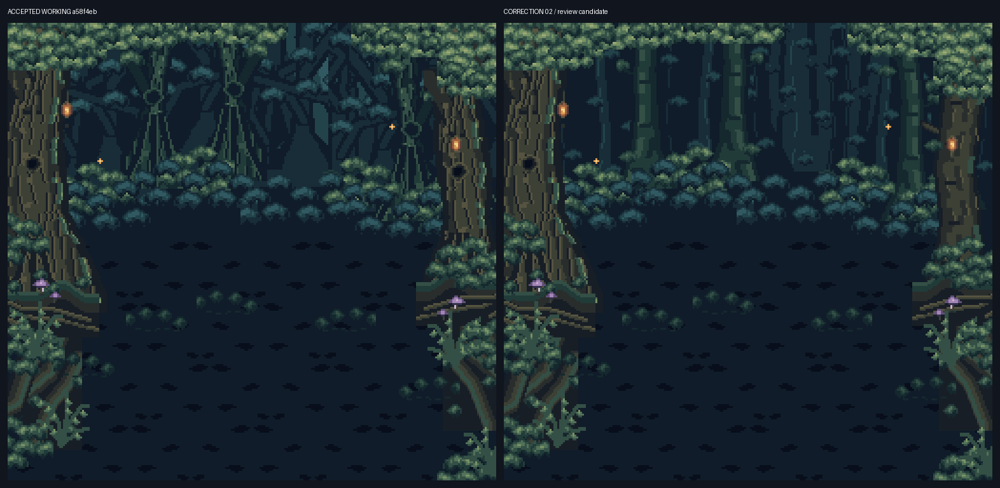